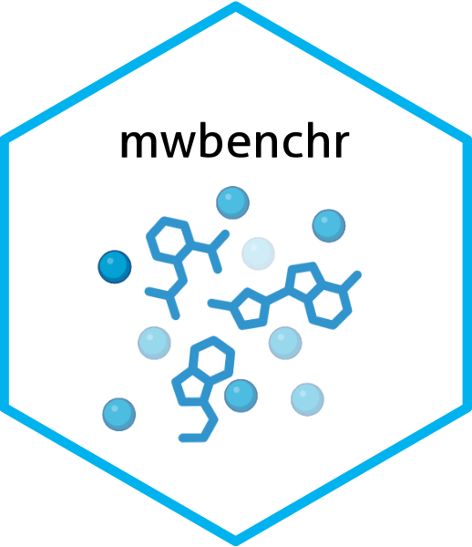

Contributing to mwbenchr
Source:.github/CONTRIBUTING.md
We’re excited to have you contribute to mwbenchr! This document outlines how you can get involved and contribute to the project.
For more detailed guidance on contributing to mwbenchr and other tidyverse packages, check out the development contributing guide and our code review principles.
Ways you can contribute
Bug Reports
- If you’ve encountered a bug, please let us know by opening an issue.
- Provide a minimal reproducible example, so we can quickly see the issue.
- Mention your R version, the package version, and your operating system.
- If possible, include the full error message and traceback.
Setting up your development environment
-
Fork the repo and clone it to your local machine:
-
Install all the necessary development dependencies:
# 1st, install devtools if you haven't already install.packages("devtools") # 2nd, install the package dependencies devtools::install_deps(dependencies = TRUE) # 3rd, install additional development tools like testthat and BiocCheck install.packages(c("testthat", "covr", "BiocCheck")) -
Load the package and run tests:
# load the package for development purposes devtools::load_all() # run the tests devtools::test() # Check the package devtools::check()
Coding Guidelines
R Code Style
- We follow the Bioconductor coding style.
- Use
snake_casefor function names and variable names. - Keep line lengths under 80 characters for readability.
- Use clear, meaningful names for functions and variables.
- Add type checks for function parameters where appropriate.
Documentation
- We use
roxygen2for documentation, so be sure to include@param,@return, and@examplesin your functions. - Include working examples in the
@examplessection (use\dontrun{}for API calls). - Update vignettes if you’re adding significant new features.
Pull Request Process
Before submitting your pull request, please make sure:
-
You’ve done all the necessary checks:
- Run
devtools::check()and fix any warnings or errors. - Run
BiocCheck::BiocCheck()to catch any Bioconductor-specific issues. - Make sure all tests pass by running
devtools::test(). - Update
NEWS.mdif you’ve added features or fixed bugs. - Don’t forget to update documentation if necessary.
- Run
-
When submitting the pull request:
- Provide a clear description of what’s changed.
- Link to any relevant issues.
- Include tests for new functionality.
- Ensure the code is properly covered by tests.
- Make sure all continuous integration checks pass.
-
Review process:
- Maintainers will review your PR and may ask for changes.
- Once your PR is approved, it will be merged.
Testing Guidelines
Unit Tests
Here’s a basic structure for testing a function:
test_that("function validates input correctly", {
expect_error(my_function("invalid_input"), "helpful error message")
expect_equal(my_function("valid_input"), expected_result)
})Mocking API Calls
If your function makes API calls, here’s how you can mock them in tests:
test_that("API function constructs correct endpoint", {
mock_request <- function(client, endpoint, ...) {
list(endpoint = endpoint)
}
with_mocked_bindings(
mw_request = mock_request,
{
result <- my_api_function(client, "param")
expect_match(result$endpoint, "expected/endpoint/param")
}
)
})Documentation Guidelines
Function Documentation Template
Use this format for documenting your functions:
#' Brief description of what the function does
#'
#' A more detailed explanation of how the function works, when to use it,
#' and any important considerations.
#'
#' @param param1 Description of the first parameter
#' @param param2 Description of the second parameter
#'
#' @return What this function returns
#'
#' @examples
#' \dontrun{
#' # Example of how to use the function
#' result <- my_function("example")
#' print(result)
#' }
#'
#' @exportRelease Process
Version Numbers
- We follow Semantic Versioning, so be sure to update the version number in the
DESCRIPTIONfile accordingly. - Keep track of changes in
NEWS.md.